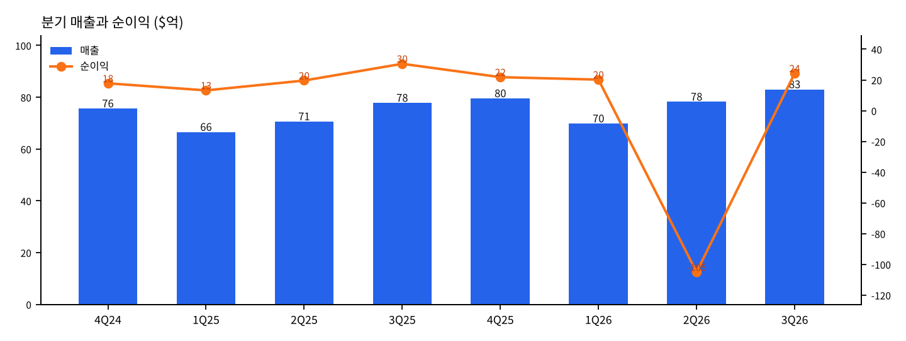
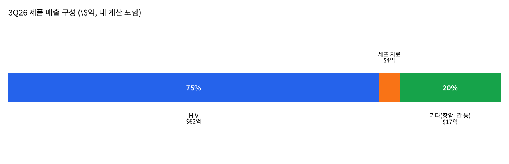
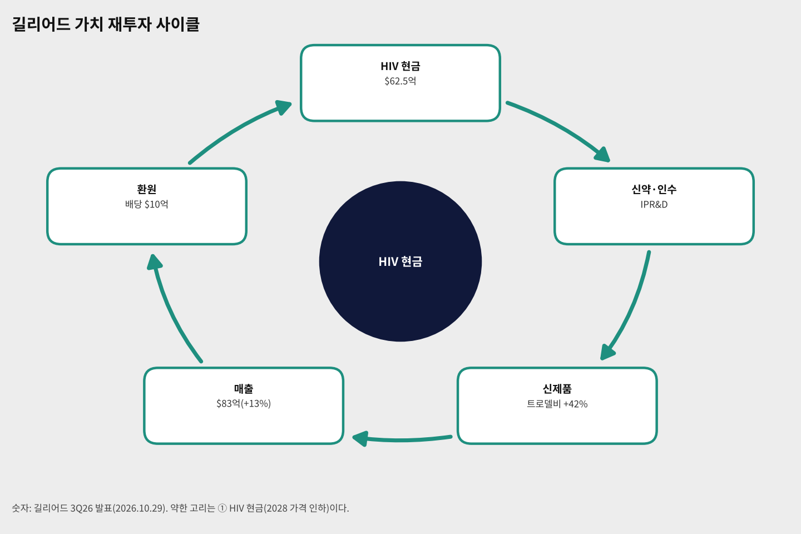

길리어드는 HIV 시장 선두 업체로 빅타르비가 핵심이다. 예방 주사 예즈투고와 항암제 트로델비가 성장 축이고, 세포 치료는 경쟁 압력으로 감소한다.
| 항목 | 내용 |
|---|---|
| 종목 | Gilead Sciences (GILD) · NASDAQ · 헬스케어(바이오제약) · 캘리포니아 포스터시티 |
| 멀티플 | TTM GAAP EPS 음수라 PER·PEG 산출 불가(08 항목 표) |
| 최근 분기(3Q26) | 제품 매출 $83억, GAAP EPS $1.94, 비GAAP EPS $2.55 |
| 가이던스(FY26) | 제품 매출 $310~313억, HIV 약 +12%, 비GAAP EPS(IPR&D 제외 예시) $8.75~9.10 |
| 직원 수 | 약 17,000명(트레이딩뷰) |
| 직책 | 인물 | 역할·특징 |
|---|---|---|
| 회장·CEO | 대니얼 오데이(Daniel O'Day) | '10년 만에 가장 강한 기존 사업 성장'이라고 설명 |
| CFO | 앤드루 디킨슨(Andrew Dickinson) | 2028년 빅타르비 영향 $15억을 설명 |
경영 스타일: 'HIV 방어 + 신제품·인수로 성장'. HIV 예방(예즈투고)과 항암·간질환 신제품으로 빅타르비 의존을 줄이려 한다.
예즈투고는 연 2회 주사이며 이용자의 70% 이상이 재투여를 받는다고 설명했다.
궤양성 대장염 후보(emvistegrast) 2상 긍정 결과, 2027년 3상 계획.
다음 실적발표는 세 가지 질문에 답하는 자리다.
1. 예즈투고·데스코비가 빅타르비 가격 인하를 상쇄하나?
2. 트로델비·리브델지 성장이 이어지나?
3. 인수 관련 비용이 GAAP 이익을 얼마나 누르나?
한 줄 판정 규칙: 첫 질문(HIV 방어)과 둘째 질문(신제품)이 모두 이어지면 약한 고리(2028 빅타르비 감소)가 풀린다.
일정: 4Q26 실적 발표는 트레이딩뷰 기준 2027.02.04(확인 필요).
| 분기 | 매출 | 순이익 | EPS | 조정 EPS | 특이 사항 |
|---|---|---|---|---|---|
| 4Q24 | $75.6억 | $17.8억 | 1.42 | 2.12 | |
| 1Q25 | $66.5억 | $13.2억 | 1.04 | 1.58 | |
| 2Q25 | $70.6억 | $19.6억 | 1.56 | 1.90 | |
| 3Q25 | $77.8억 | $30.5억 | 2.43 | 1.67 | |
| 4Q25 | $79.5억 | $21.8억 | 1.74 | 1.37 | |
| 1Q26 | $69.8억 | $20.2억 | 1.61 | 1.34 | |
| 2Q26 | $78.2억 | $-105.0억 | -8.44 | 2.29 | GAAP 순손실(인수 관련 IPR&D·손상 $17.5억) |
| 3Q26 | $83.0억 | $24.3억 | 1.94 | 1.72 | 비GAAP EPS $2.55(회사). 트레이딩뷰 Reported $1.72 |
3Q26 매출 $83.0억(+7%), GAAP EPS $1.94, 회사 비GAAP EPS $2.55(회사 발표 2026.10.29). 트레이딩뷰 Reported 조정 EPS($1.72)는 회사 비GAAP과 정의가 달라 값이 다르다. 2Q26 GAAP 순손실은 인수 관련 IPR&D 비용과 손상 때문이다. 매출·순이익·EPS(GAAP 희석)는 트레이딩뷰 스캐너, 조정 EPS는 트레이딩뷰 실적 페이지의 Reported 값이다. 분기 정렬은 오래된 분기→최신이다.

흐름 요약: 최근 분기 매출은 $83.0억로 전년 동기 $77.8억 대비 +6.7%, 순이익은 $24.3억(전년 $30.5억)다. 최근 4분기 GAAP EPS는 $-3.15, 조정 EPS는 $6.72다.
| 제품군 | 내용 | 3Q26 매출 | 비고 |
|---|---|---|---|
| HIV | 빅타르비·데스코비·예즈투고 | $62.5억 | +18%, 제품 매출의 약 75% |
| 빅타르비(HIV 내) | HIV 치료제 | $41.0억 | +10% |
| 세포 치료 | 카이트(CAR-T) | $3.55억 | -18% |
| 기타(내 계산) | 항암·간 등 | 약 $17.0억 | 총 $83억 − HIV − 세포 치료 |

HIV가 제품 매출의 약 75%다. 표의 빅타르비는 HIV 안에 포함된 값이며 차트에서는 제외했다.
길리어드는 '생명을 위협하는 질병의 치료제를 개발해 환자에게 제공하는 것'을 목표로 한다.
| 축 | 내용 |
|---|---|
| HIV | 치료·예방 포트폴리오 방어 |
| 항암 | 트로델비 +42% |
| 환원 | 3Q 배당 $10억 |

| 이동평균 | 값 | 종가 대비 | 위치 |
|---|---|---|---|
| 5일선 | $168.57 | +0.2% | 종가 위 |
| 20일선 | $166.30 | +1.6% | 종가 위 |
| 50일선 | $156.37 | +8.1% | 종가 위 |
| 100일선 | $146.87 | +15.1% | 종가 위 |
| 200일선 | $142.12 | +18.9% | 종가 위 |
52주 고가 $176.58(2026-11-05)·저가 $116.88(2026-01-05) 범위에서 종가 $168.98는 5일선, 20일선, 50일선, 100일선, 200일선을 웃돌고.
| 규칙 | 기준 | 현재 값 | 신호 |
|---|---|---|---|
| 장기 추세 필터 | 종가 vs 200일선 | $168.98 > $142.12 | 매수 |
| 중장기 교차 | 50일선 vs 200일선 | $156.37 > $142.12 | 매수 |
| 단기 교차 | 20일선 vs 50일선 | $166.30 > $156.37 | 매수 |
| 돈키언 채널 | 55일 고가 $176.58 / 저가 $142.60 | 중간값 $159.59 위 | 매수 |
| 1개월 모멘텀 | 21거래일 수익률 | +8.0% (기준 $156.51) | 매수 |
| 3개월 모멘텀 | 63거래일 수익률 | +17.8% (기준 $143.44) | 매수 |
| 6개월 모멘텀 | 126거래일 수익률 | +29.3% (기준 $130.69) | 매수 |
| 12개월 모멘텀 | 252거래일 수익률 | +36.2% (기준 $124.09) | 매수 |
| 종합 (8개 평균) | +1.00 | 강한 매수 |
해석: 매수 신호 8개(장기 추세 필터, 중장기 교차, 단기 교차, 돈키언 채널, 1개월 모멘텀, 3개월 모멘텀, 6개월 모멘텀, 12개월 모멘텀), 매도 신호 0개(없음). CTA 점수 +1.00(강한 매수). 14일 ATR $5.24 (3.1%), 52주 고가 $176.58 · 저가 $116.88.
| 가격 | 기준 | 무엇이 바뀌나 |
|---|---|---|
| $176.58 | 55일 고가 | 돌파 시 채널 상단 갱신 |
| $159.59 | 돈키언 중간값 | 55일 채널 중간값 위/아래로 신호가 바뀜 |
| $156.51 | 1개월 모멘텀 기준가 | 종가가 이 가격 위면 1개월 신호 매수 |
| $143.44 | 3개월 모멘텀 기준가 | 종가가 이 가격 위면 3개월 신호 매수 |
| $142.60 | 55일 저가 | 이탈 시 채널 하단 갱신 |
| $142.12 | 200일선 | 종가가 이 선 위/아래인지로 장기 추세 신호가 바뀜 |
| $130.69 | 6개월 모멘텀 기준가 | 종가가 이 가격 위면 6개월 신호 매수 |
| $124.09 | 12개월 모멘텀 기준가 | 종가가 이 가격 위면 12개월 신호 매수 |
가격 수준은 신호가 바뀌는 기준선일 뿐 진입·청산 가격 제안이 아니다. 20일/50일 교차는 이동평균 자체가 움직여 단일 가격으로 표시하지 않았다. 일봉·주봉은 종가 기준 직접 계산(고저 데이터 미사용)이다.
| 악재 요인 | 내용 | 강도 |
|---|---|---|
| 2028 빅타르비 가격 인하 | 연 $15억 매출 감소 예상 | 높음 |
| 인수 관련 GAAP 손실 | IPR&D·손상으로 FY26 GAAP 손실 예상 | 중간 |
| 세포 치료 감소 | $3.55억(-18%) | 중간 |
| HIV 편중 | HIV가 제품 매출의 약 75% | 중간 |
| 티커 | 회사 | PER(TTM) | PEG | P/S | EPS 성장(YoY) |
|---|---|---|---|---|---|
| GILD | 길리어드 사이언시스 | – | – | 6.75배 | – |
| AMGN | 암젠 | 25.7배 | 0.80 | 6.41배 | +33% |
| ABBV | 애브비 | 49.2배 | 0.15 | 7.86배 | +338% |
| REGN | 리제네론 | 20.9배 | 2.50 | 5.99배 | +8% |
| VRTX | 버텍스 | 34.5배 | 3.59 | 10.47배 | +10% |
비교 결론: 길리어드는 TTM GAAP EPS가 음수여서 PER·PEG를 산출할 수 없다.
길리어드는 3Q 영업현금흐름 $50억으로 배당 $10억과 인수 자금을 감당한다.
| 지표 | 값 | 출처 | 해석 |
|---|---|---|---|
| 현금·단기투자 | $80억 | 트레이딩뷰 스캐너(최근 분기) | |
| 총부채 | $262억 | 트레이딩뷰 스캐너(최근 분기) | |
| 순부채(부채−현금) | $182억 | 내 계산 | 현금 대비 부채 부담 |
| 잉여현금흐름(TTM) | $138억 | 트레이딩뷰 스캐너 | |
| TTM 매출 | $311억 | 트레이딩뷰 스캐너 |
| 기준 | 매출 | P/S | 비고 |
|---|---|---|---|
| 내 계산(종가 ÷ 최근 4분기 매출 합계) | $310.5억 | 6.75배 | 시총은 정렬용 데이터에서만 사용 |
| 동종(트레이딩뷰) | – | AMGN 6.41배 · ABBV 7.86배 · REGN 5.99배 · VRTX 10.47배 | 11.19 |
해석: P/S 6.86배는 암젠(6.41배)과 비슷하다.
EBITDA는 영업활동의 현금 창출력을 보는 지표이고, PEG는 PER을 EPS 성장률로 나눈 값이다. EBITDA·FCF는 트레이딩뷰 TTM 값이다.
| 지표 | 값 | 산출 |
|---|---|---|
| EBITDA(TTM) | $147억 | 트레이딩뷰 스캐너 |
| EBITDA 마진 | 47.3% | EBITDA ÷ TTM 매출(내 계산) |
| FCF 마진 | 44.4% | FCF ÷ TTM 매출(내 계산) |
| PER(GAAP TTM) | – | $168.98 ÷ $-3.15 |
| PER(조정 TTM) | 25.1배 | $168.98 ÷ $6.72 |
| 방식 | PER | EPS 성장률 | PEG | 판정 |
|---|---|---|---|---|
| GAAP EPS (TTM $-3.15) | – | – | 산출 불가 | 참고 |
| 조정 EPS (TTM $6.72) | 25.1배 | -8% ($7.27 → $6.72) | 산출 불가 | 참고 |
판정: PEG 산출 불가(TTM EPS가 음수이거나 전년 기저가 음수) PEG 기준은 1.0 이하 투자 적격, 0.5 이하 적극 매수다. EPS 성장률은 최근 4분기 EPS 합계를 직전 4분기 합계와 비교한 값(내 계산)이고, 일회성 항목이 있으면 조정 EPS 행을 함께 본다.

길리어드의 사이클은 HIV 현금 → 신약·인수 → 신제품 → 매출 → 환원이다.
| 고리 | 현재 숫자 | 고리 강도 | 약해지는 신호 |
|---|---|---|---|
| ① HIV 현금 | HIV $62.5억(+18%) | 강함 | 2028 가격 인하 |
| ② 신약·인수 | IPR&D, 인수 | 진행 중 | GAAP 손실 |
| ③ 신제품 | 트로델비 +42%, 예즈투고 $3.05억 | 강함 | 경쟁 |
| ④ 매출 | $83억(+13%) | 강함 | HIV 편중 |
| ⑤ 환원 | 3Q 배당 $10억 | 보통 | 투자 우선 |
사이클의 특징: 가장 약한 곳은 ① HIV 현금(2028)이다. 가격 인하로 빅타르비 매출이 줄 예정이다.